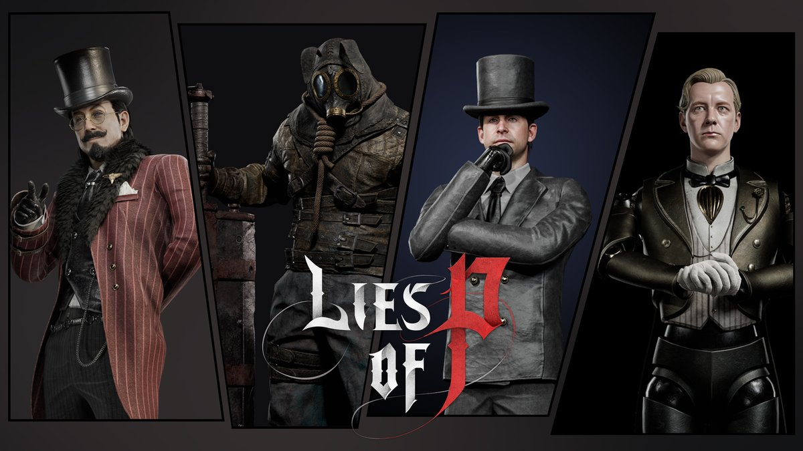
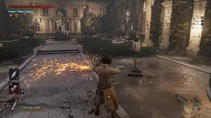
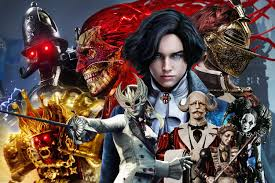

Lies of P: Overture
La expansión que precede a Krat. Una precuela donde descubrirás qué pasó antes de que P despertara.
El Origen del Frenesí
Overture es una precuela completa ambientada antes de los eventos del juego principal. Toma el rol de la Cazadora Lea, una guerrera enviada a Krat para investigar el inicio de la enfermedad de la Petrificación.
El DLC fue anunciado en septiembre 2024 y promete aproximadamente 20 horas de contenido nuevo: nuevos jefes, nuevas zonas, nuevas armas y una historia paralela que conecta directamente con el juego principal.
Round8 Studio y NEOWIZ confirmaron que Overture es completamente nuevo: no es DLC de relleno, sino una expansión narrativa importante.

⚔️ ¿Qué Trae el DLC?
Nuevas Zonas
Explora distritos inéditos de Krat: el Distrito del Carnaval, la Calle Subterránea y el Antiguo Reino Profundo. Cada zona con biomas únicos.
10+ Nuevos Jefes
Lucha contra jefes únicos diseñados para Overture, incluyendo una Caza Salvaje, modo Bloodborne con velocidad agresiva.
Nuevas Armas
Más de 30 armas inéditas: incluyendo armas de fuego (revólveres, escopetas) y las nuevas "Hojas Especiales".
Nueva Protagonista
Juega como Lea, cazadora de la organización Cazadores. Estilo de juego más agresivo, enfocado en posicionamiento y combos.
Hadas Compañeras
Sistema de invocación de hadas mecánicas que asisten en combate. Cada una con habilidades únicas.
Lore Expandido
Descubre el origen real del Ergo, los Alquimistas y cómo Geppetto inició su obsesión por las marionetas perfectas.

Lea, la Cazadora
A diferencia de P, Lea es una humana entrenada en la caza. Su estilo de combate refleja eso:
- Velocidad superior: esquives más largos, ataques más rápidos.
- Armas duales: puede equipar dos armas simultáneamente (una en cada mano).
- Arcabuz integrado: sustituye el brazo de Legión por un arma de fuego para ataques a distancia.
- Hadas mecánicas: compañeras que se invocan en combate.
Esta nueva mecánica acerca Overture al estilo de Bloodborne, con un combate más frenético y ofensivo.
🦴 Jefes Destacados

The Twin Marquise
Hermanas gemelas mecánicas. Pelean en sincronía perfecta. Una de las batallas más difíciles del DLC.
⚡ Daño eléctricoThe Two-Faced Carnival
Maestro del carnaval con dos personalidades. Cambia su moveset según la fase. Ambiente surrealista.
🎭 Múltiples fases
The Wild Hunt Leader
Versión Lies of P de la Caza Salvaje. Combate ultrarrápido al estilo Bloodborne. Solo para veteranos.
💀 Combate definitivo🔗 Conexión con Lies of P
Overture responde preguntas cruciales del juego principal:
- ¿Quién creó las primeras marionetas y por qué Geppetto las "perfeccionó"?
- ¿Cuál es el verdadero origen del Ergo y por qué es tan codiciado?
- ¿Cómo se relacionan los Alquimistas con la Hermandad del Conejo Negro?
- ¿Qué pasó con la verdadera familia de Geppetto antes del Frenesí?
- ¿Quién fue la "primera mentira"?
Los eventos del DLC ocurren aproximadamente 30 años antes del juego principal, y algunos personajes aparecen jóvenes (como Geppetto y Simon Manus).
📅 Información de Lanzamiento
Lies of P: Overture se lanzó el 21 de septiembre de 2025
Disponible en:
Requiere el juego base. Incluido en Xbox Game Pass desde el día de lanzamiento.
— Round8 Studio